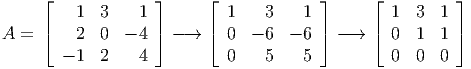

and the point x* = (3,2,0,1)T is an optimal solution.
- (5 points) Show x* is not a basic feasible solution.
- (10 points) Find a nonzero direction d ∈ ℝ4 satisfying Ad = 0 with d j = 0 if xj* = 0.
- (10 points) What can you say about cT d? Justify your answer.
Solution:
- Row reduce the 3 columns of A used by x*:
 so the set of columns used by x* gives a submatrix of A of rank only 2.
- We have
so we can take d = (2,-1, 0, 1)T .
- We must have cT d = 0, since both x* + 2d and x*- d are feasible, so if cT d≠0 then one of these two feasible points would be better than x*, contradicting the optimality of x*.
A primal LP is
The corresponding dual problem is

Find optimal solutions to the primal and dual problems.
Solution:
Variable f1 has far smaller cost than f2, so we try to make f1 as large as possible. Similarly, if we have a choice between f3 and f4, we would pick f3. This gives a primal feasible solution:
with value
If we can find a dual feasible solution that satisfies complementary slackness then we have an optimal solution.
All the primal variables are positive, so we need all four dual constraints to hold at equality. The 2nd and 4th primal inequality constraints are strictly satisfied, so we need w2 = w4 = 0. This implies we need
Since we are primal and dual feasible and we satisfy complementary slackness, we are optimal.
Check: dual objective function value is

where the dual slack variables have been included explicitly. Assume both problems are feasible. We let ej ∈ ℝn denote the jth unit vector. We also work with the related primal-dual pair of problems
- Show that problem (Pj) is always feasible.
- Assume (Pj) has an unbounded optimal value. Show xj is unbounded in the feasible region of (P).
- Assume (Pj) has a finite optimal value. What is that optimal value? Can xj be unbounded in the feasible region of (P)? Why or why not?
- Assume (Dj) is feasible. Can sj be unbounded in the feasible region of (D)? Why or why not?
- Assume (Dj) is infeasible. Can sj be unbounded in the feasible region of (D)? Why or why not?
- Show exactly one of the following two statements is true:
- xj is unbounded in the feasible region of (P).
- sj is unbounded in the feasible region of (D).
Solution:
- Note that d = 0 is always feasible in (Pj).
- Since (Pj) has an unbounded optimal value, there must exist a ray ≥ 0 with -ejT < 0, A = 0. Let be feasible in (P). Then + α is feasible in (P) for all α ≥ 0, and we have ( + α)j →∞ as α →∞.
- (Pj) is a homogeneous problem, so the only possible finite optimal value is 0. For xj to be unbounded in (P), there must exist a direction ≥ 0 with j > 0, A = 0. But no such exists since (Pj) has optimal value 0.
- Let , be feasible in (D) and let , be feasible in (Dj). Then y = + α, s = + α + αej is feasible in (D) for any α ≥ 0. Note that sj →∞ as α →∞.
- For sj to be unbounded, we need to find a direction , with AT + = 0, ≥ 0, j > 0. We can scale this direction so that j ≥ 1. Then , (- ej) is feasible in (Dj). If (Dj) is infeasible then no such direction exists, so sj must be bounded.
- There are 2 possible cases for (Pj) since it is always feasible:
- (Pj) has unbounded optimal value, so (Dj) is infeasible, so in this case we have xj is unbounded and sj is bounded.
- (Pj) has zero optimal value, so (Dj) is feasible, so in this case we have xj is bounded and sj is unbounded.

where we have a constraint for each w ∈ Q, and we define
Derive an equivalent linear program to (SILP) with the same variables y1, y2 and with a finite number of constraints.
Solution:
We can sketch Q:

Any point in Q can be represented as a convex combination of the extreme points plus a nonnegative multiple of the ray:
with λ1 + λ2 + λ3 = 1,λj ≥ 0 for j = 1, 2, 3,μ ≥ 0.
So (SILP) is equivalent to the LP with 4 constraints:
The feasible region for this LP is as follows:

Note that we have
So if y is feasible in (LP) then it is feasible in (SILP).
Conversely, if y is not feasible in (LP) then either wT y > 1 for one of the extreme points of Q, or y1 + y2 < 0, which implies wT y > 1 for w = -t(1, 1)T ∈ Q for large enough t. So y is not feasible in (SILP).
Thus the two problems are equivalent.